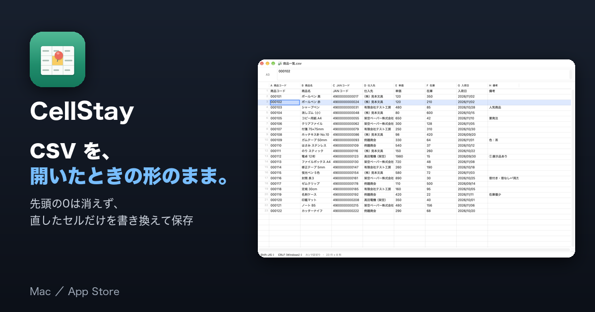

CellStay

CellStay（セルステイ）は、CSV ファイルを開いたときの形のまま直せる Mac アプリです。Excel で作った Shift-JIS の CSV も、文字コード・改行・区切り文字を自動で見分けて開き、直したセルだけを書き換えて保存します。直していない部分は、元のファイルと1バイトも変わりません。
使い方
- 「ファイル」メニューの「開く…」（⌘O）で CSV を選ぶか、Finder で CSV を CellStay のアイコンにドラッグして開きます。
- 直したいセルを選んで、そのまま文字を打つか return を押すと入力が始まります。return で確定して下のセルへ、tab で右のセルへ進みます。esc で入力を取り消します。
- 表の上の欄でも、選んだセルの中身を直せます。
- 「ファイル」メニューの「保存」（⌘S）で保存します。開いたときと同じ文字コード・改行で書き戻します。
よくある質問
- Q. 郵便番号や社員番号の先頭の 0 が消えませんか？
- A. 消えません。CellStay はすべてのセルを文字として扱います。数字・日付・数式らしい文字も、書いてあるとおりに表示し、そのまま保存します。
- Q. 1か所直しただけなのに、ファイル全体の書き方が変わってしまいませんか？
- A. 変わりません。直していないセルや行は、引用符の付け方や改行も含めて元のまま書き戻します。何も直さずに保存すれば、元のファイルと同じ内容になります。
- Q. 開いたら文字化けしていました
- A. 文字コードの判別が外れた可能性があります。「ファイル」メニューの「文字コードを指定して開き直す」から選び直してください。列がうまく分かれないときは「区切り文字を指定して開き直す」を使います。
- Q. 別の文字コードで保存したい
- A. 画面の下で、保存するときの文字コードと改行を選べます。選んだ文字コードで表せない文字があるときは、どのセルのどの文字かを示して保存を止めます。
- Q. 対応している形式は？
- A. 文字コードは UTF-8（BOM 付き／なし）、Shift-JIS、EUC-JP。改行は CRLF・LF・CR。区切りはカンマ・タブ・セミコロンです。UTF-16（Excel の「Unicode テキスト」）には対応していません。
- Q. 行や列を足したり消したりできますか？
- A. 「表」メニューから行・列の挿入と削除ができます。検索と置換は「編集」メニューの「検索」（⌘F・⌥⌘F）にあります。
- Q. Excel からコピーした表を貼れますか？
- A. 貼れます。Excel のセルをコピーして、CellStay で貼り付けたい位置のセルを選んでペースト（⌘V）してください。
- Q. 自動で保存されますか？
- A. されません。保存は ⌘S を押したときだけです。保存せずに閉じようとすると確認が出ます。
お問い合わせ
不具合のご報告やご要望は emc.hs07@gmail.com までお寄せください。
プライバシーポリシー
 文字アトリエ
文字アトリエ PDF PageRebind
PDF PageRebind Futamado
Futamado ひきだしメニュー
ひきだしメニュー PhotoParcel
PhotoParcel PhotoParcel Select
PhotoParcel Select チャプたん
チャプたん チャプたんブックマーク
チャプたんブックマーク MIDIアトリエ
MIDIアトリエ 事務電卓
事務電卓 Tecola
Tecola グッズ注文まとめ
グッズ注文まとめ